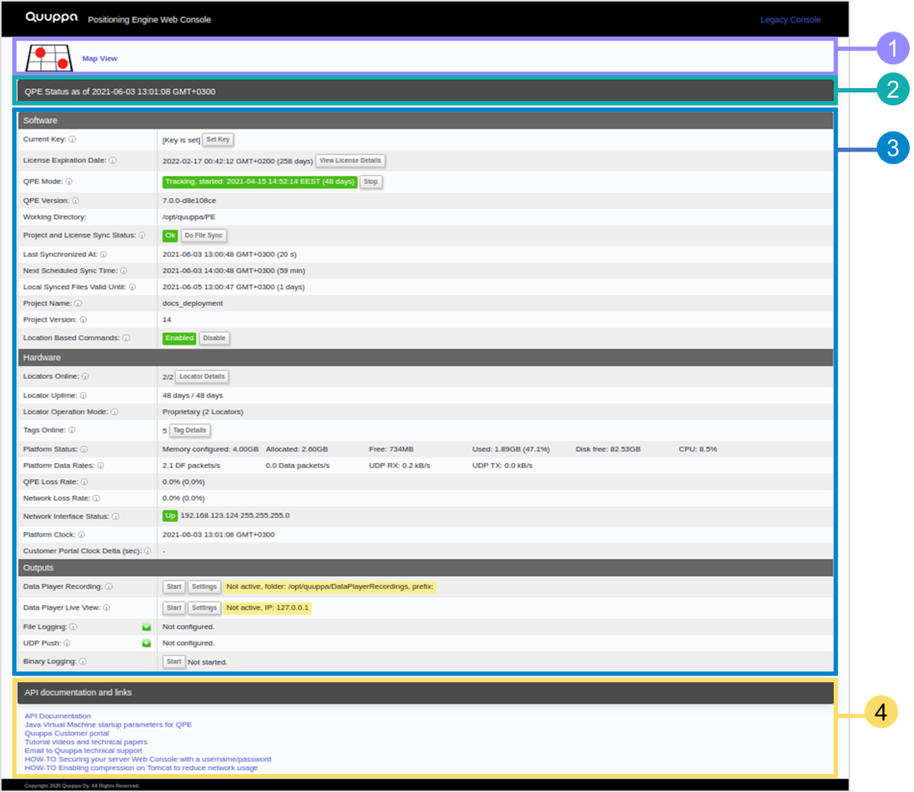

Main View
The Positioning Engine Web Console's main view is the place to start. It is a dashboard that shows the current status and health of the QPE and the overall Quuppa System. It uses the Quuppa APIs to provide all of the displayed information. It also provides various navigation links to more in depth information.
The main view is divided into the following sections:

- Link to the Map View - This link will take you to the map view of your
deployment, where you can check how your tags are moving around in real time.
For more details, please see the QPE Web Console
Map View section of this guide.

- QPE Status Time Stamp - The status bar at the top of the page shows the time stamp (date, time and applied timezone) for the data shown in the main page, i.e. when was the data last updated. This is helpful for identifying whether the data presented is up to date and whether the Web Console is updating regularly.
- QPE Status Panel - This section provides a variety of data related to the
project and QPE status as well as the health of the Quuppa system. This is the
place to start when you want to check if the system is up and running as
expected. This section can be divided into three subsections:
- Software - The Software section is the main control panel for the QPE in the Web Console. It enables the execution of project related actions (e.g. setting a project key and the QPE mode) as well as provides more details about the software version being run as well as general system performance. For more details, please see the Software section of this guide.
- Hardware - The Hardware section provides a range of information about the different hardware components in your Quuppa system. For example, you can check how many Locators are online (i.e. currently running and connected to the network), how many tags are online (i.e. "seen" by the system) and various indicators that can be used to check the whether the system is running without problems. For more details, please see the Hardware section of this guide.
- Outputs - The Outputs section of the main view allows you to control various outputs for the QPE (e.g. setting the QPE to record data to be viewed later using the Quuppa Data Player (QDP)) and to start binary logging for troubleshooting purposes. For more information, please see the Outputs section of this guide.
- API Documentation and Link -This section at the bottom of the QPE Web Console's main view, provides access to the API documentation for building your own web-based application to interact with the QPE as well as other useful links. For more details, please see the API Documentation and Links section of this guide.